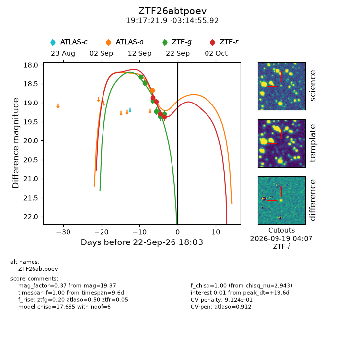
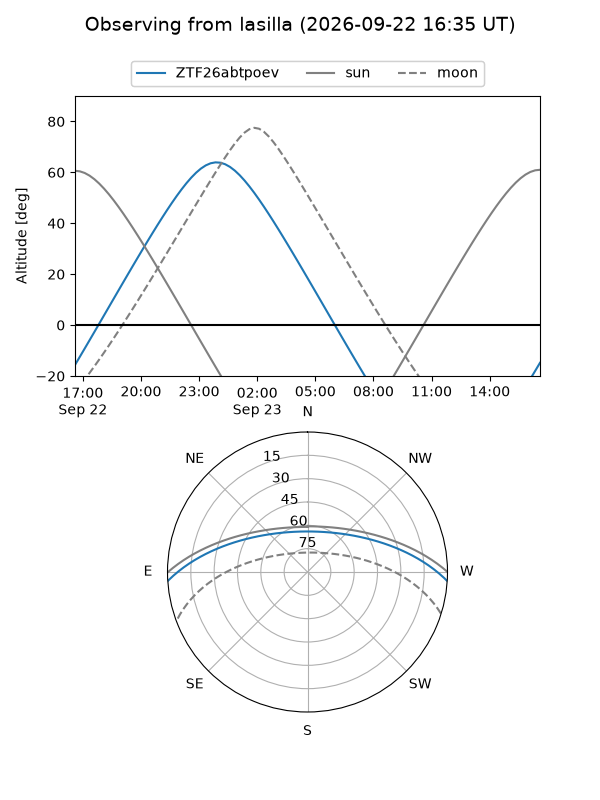
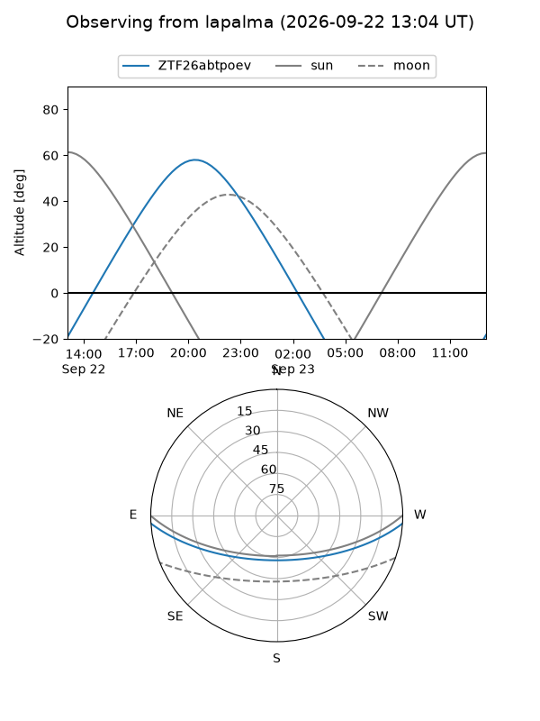
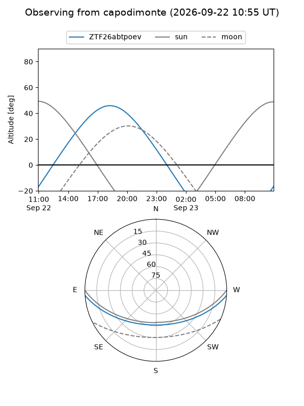
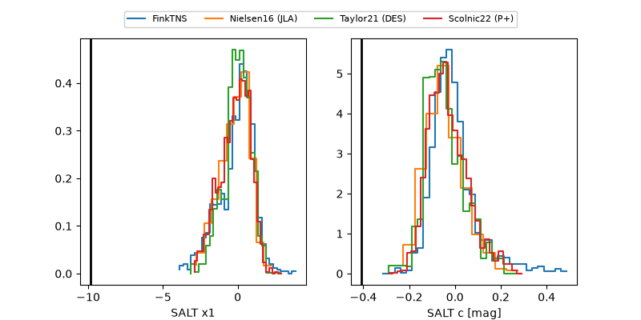

ZTF26abtpoev
Target ZTF26abtpoev at 2026-09-23 05:40
Aliases and brokers:
FINK-ZTF: ztf.fink-portal.org/ZTF26abtpoev
Lasair-ZTF: lasair-ztf.lsst.ac.uk/objects/ZTF26abtpoev
ALeRCE-ZTF: alerce.online/object/ZTF26abtpoev
Direct TNS query: direct search
alt names
ZTF26abtpoev (ztf,fink_ztf)
Coordinates:
equatorial (ra, dec) = 289.3414,-3.24887
equatorial (HMS+DMS) = 19:17:21.94,-03:14:55.92
galactic (l, b) = (32.9871,-7.24723)
Flags:
peak dt: +14.0
likely cv: !!
Photometry:
last atlaso=18.67, ztfg=19.30, ztfr=19.37
1 atlaso, 6 ztfg, 4 ztfr detections
Lightcurve

Visibility



Additional plots
